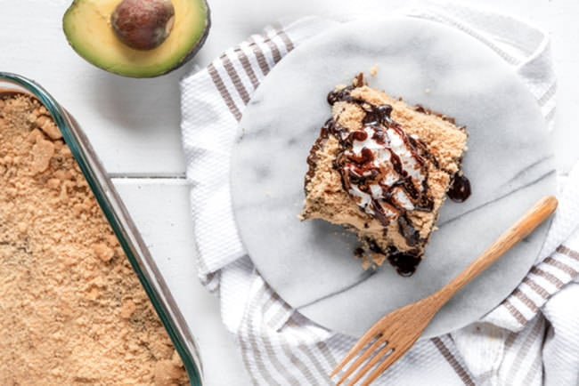

Almond Blondie

The Best Almond Croissant Blondies
Ingredients:
- 1 cup almond flour
- 1/2 cup butter
- 3/4 cup brown sugar
- 1 tsp baking powder
- 1/2 tsp salt
- 1 cup chocolate chips
Steps:
- Preheat the oven to 350F. Lightly grease a 9x13 baking pan.
- In the bowl of a stand mixer, cream together the butter and sugars. Add the eggs and vanilla and mix on high until light and fluffy, about 3 minutes.
- Add the almond flour, baking powder, and salt. Mix to fully incorporate. Stir in the chocolate chips.
- Pour the dough into the greased baking dish. Smooth into an even layer. Bake for 20-25 minutes, until golden. Allow to cool for 15 minutes. Slice into bars and enjoy!